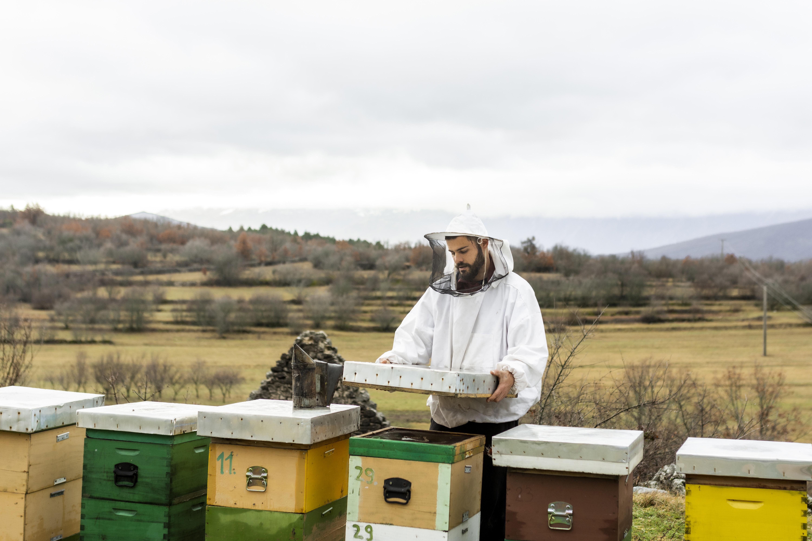

Miere locală, direct de la apicultori pasionați
Descoperă produse apicole naturale, obținute cu grijă de furnizori locali care respectă ritmul naturii și calitatea fiecărui sezon.
La HerbaVital, credem că produsele naturale sunt mai valoroase atunci când provin din surse cunoscute și responsabile. De aceea, promovăm mierea locală și produsele apicole realizate de apicultori care lucrează cu atenție, răbdare și respect față de albine.
Despre furnizorii noștri locali
Colaborăm cu apicultori locali care pun accent pe calitate, prospețime și metode de lucru cât mai apropiate de natură. Fiecare produs apicol reflectă zona din care provine, florile de sezon și grija acordată stupilor pe tot parcursul anului.
Prin această pagină, ne dorim să apropiem clienții de producători locali de încredere și să oferim o experiență mai transparentă, în care utilizatorul poate înțelege mai bine originea produselor pe care le alege.
De ce să alegi miere locală?
Susții producătorii locali
Alegerea mierii locale contribuie la susținerea apicultorilor din comunitate și la promovarea unei relații mai directe între client și furnizor.
Origine mai clară
Produsele locale oferă o trasabilitate mai bună, deoarece utilizatorul poate afla mai ușor zona de proveniență și tipul produsului.
Arome influențate de sezon
Mierea poate avea gust, culoare și textură diferite în funcție de plantele disponibile în perioada recoltării.
Respect pentru natură
Apicultura responsabilă sprijină biodiversitatea și pune în valoare rolul important al albinelor în ecosistem.
Produse apicole disponibile
Miere polifloră
Mierea polifloră este obținută din nectarul mai multor plante și are o aromă complexă, diferită în funcție de sezon și zonă. Este potrivită pentru ceaiuri, deserturi simple sau consum zilnic moderat.
Miere de salcâm
Mierea de salcâm este apreciată pentru gustul delicat, textura fluidă și aroma ușoară. Este o alegere potrivită pentru persoanele care preferă un îndulcitor natural mai blând.
Miere de tei
Mierea de tei are o aromă mai intensă și este adesea asociată cu momentele de relaxare. Poate fi folosită în ceaiuri, combinații cu lămâie sau deserturi de casă.
Fagure cu miere
Fagurele păstrează mierea în forma sa naturală, direct din stup. Are o textură aparte și oferă o experiență autentică pentru cei care preferă produse cât mai puțin procesate.
Polen
Polenul este un produs apicol bogat în nutrienți, folosit frecvent în iaurt, smoothie-uri sau mic dejunuri echilibrate. Are un gust specific și trebuie consumat cu prudență de persoanele sensibile la alergii.
Propolis
Propolisul este cunoscut pentru aroma sa intensă și pentru utilizarea sa în produse naturiste. Se regăsește adesea sub formă de tinctură, spray sau suplimente.
Cum ajunge produsul la client?
Procesul începe cu îngrijirea atentă a stupilor și monitorizarea stării familiilor de albine. După recoltare, mierea este verificată, pregătită și ambalată cu grijă, astfel încât să își păstreze cât mai bine gustul, textura și caracterul natural.
HerbaVital poate facilita legătura dintre clienți și furnizorii locali, oferind informații despre tipurile de produse disponibile, zona de proveniență și modalitatea de contact.
Tabel comparativ produse apicole
| Produs apicol | Proveniență | Utilizare | Observații |
|---|---|---|---|
| Miere polifloră | Flori de sezon | Ceaiuri, deserturi, consum zilnic | Aromă variabilă |
| Miere de salcâm | Flori de salcâm | Îndulcitor natural | Gust delicat |
| Miere de tei | Flori de tei | Ceaiuri, deserturi | Aromă intensă |
| Fagure | Direct din stup | Consum ca atare | Textură naturală |
| Polen | Stupină locală | Iaurt, smoothie, mic dejun | Atenție la alergii |
| Propolis | Stupină locală | Produse naturiste | Gust intens |
Din stupină, mai aproape de tine
Imagini din procesul de îngrijire a stupilor, recoltare și prezentare a produselor apicole locale.
